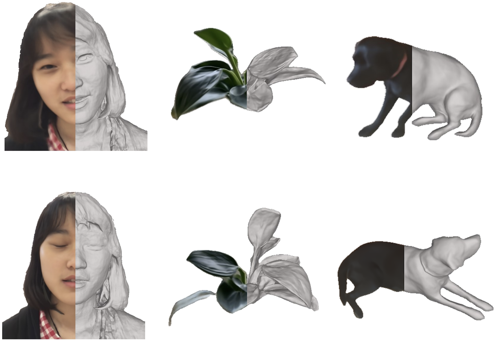
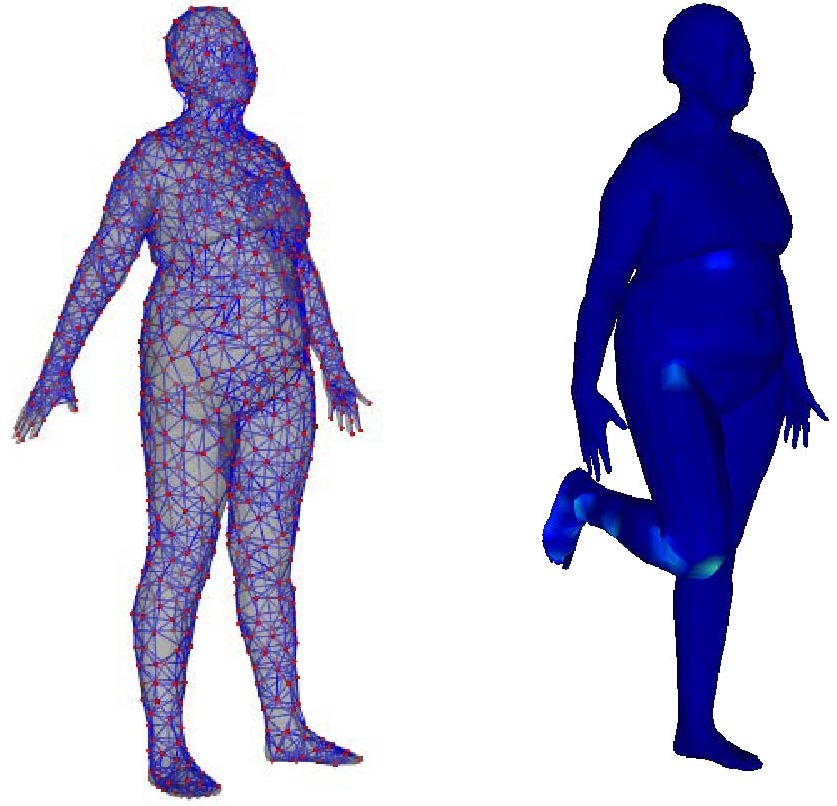
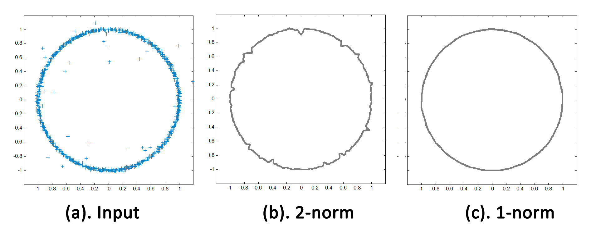

<!DOCTYPE html PUBLIC "-//W3C//DTD XHTML 1.1//EN"
  "http://www.w3.org/TR/xhtml11/DTD/xhtml11.dtd">
<html xmlns="http://www.w3.org/1999/xhtml" xml:lang="en">
<head>
<meta name="generator" content="jemdoc, see http://jemdoc.jaboc.net/" />
<meta http-equiv="Content-Type" content="text/html;charset=utf-8" />
<link rel="stylesheet" href="jemdoc.css" type="text/css" />
<title>Selected Publications</title>
</head>
<body>
<table summary="Table for page layout." id="tlayout">
<tr valign="top">
<td id="layout-menu">
<div class="menu-category">menu</div>
<div class="menu-item"><a href="index.html" class="current">Home</a></div>
<div class="menu-item"><a href="publications.html">Publications</a></div>
<div class="menu-item"><a href="teaching.html">Teaching</a></div>
<div class="menu-item"><a href="group.html">Group</a></div>
</td>
<td id="layout-content">
<div id="toptitle">
<h1>Selected Publications</h1>
</div>
<div class="infoblock">
<div class="blockcontent">
<p>Copyright Notice:<br />
This material is presented to ensure timely dissemination of scholarly and technical work.  Copyright and all rights therein are retained by authors or by other copyright holders. All persons copying this information are expected to adhere to the terms and constraints invoked by each author's copyright. These works may not be reposted without the explicit permission of the copyright holder.</p>
</div></div>
<p>You can follow his research work on <a href="https://scholar.google.com/citations?user=_D9aUrgAAAAJ&amp;hl=en">Google Scholar</a>, and some open source codes on <a href="https://github.com/USTC3DV/Code-for-Papers">GitHub</a>.</p>
<h2>Papers</h2>
<table class="imgtable"><tr><td>
&nbsp;</td>
<td align="left"><p>Fast and Robust Non-Rigid Registration Using Accelerated Majorization-Minimization<br />
Yuxin Yao, Bailin Deng, Weiwei Xu, <b>Juyong Zhang</b><br />
IEEE Transactions on Pattern Analysis and Machine Intelligence (<b>TPAMI</b>), 2023.<br />
[<a href="https://arxiv.org/abs/2206.03410">paper</a>] [<a href="https://github.com/yaoyx689/AMM_NRR">code</a>]<br /></p>
</td></tr></table>
<table class="imgtable"><tr><td>
&nbsp;</td>
<td align="left"><p>Flattening-Net: Deep Regular 2D Representation for 3D Point Cloud Analysis<br />
Qijian Zhang, Junhui Hou, Yue Qian, Yiming Zeng, <b>Juyong Zhang</b>, Ying He<br />
IEEE Transactions on Pattern Analysis and Machine Intelligence (<b>TPAMI</b>), 2023.<br />
[<a href="https://arxiv.org/abs/2212.08892">paper</a>] [<a href="https://github.com/keeganhk/Flattening-Net">code</a>]<br /></p>
</td></tr></table>
<table class="imgtable"><tr><td>
&nbsp;</td>
<td align="left"><p>RegGeoNet: Learning Regular Representations for Large-Scale 3D Point Clouds<br />
Qijian Zhang, Junhui Hou, Yue Qian, Antoni B. Chan, <b>Juyong Zhang</b>, Ying He<br />
International Journal of Computer Vision (<b>IJCV</b>), Vol.130, pages 3100–3122, 2023.<br />
[<a href="https://link.springer.com/article/10.1007/s11263-022-01682-w">paper</a>] [<a href="https://github.com/keeganhk/RegGeoNet">code</a>]<br /></p>
</td></tr></table>
<table class="imgtable"><tr><td>
&nbsp;</td>
<td align="left"><p>Neural Surface Reconstruction of Dynamic Scenes with Monocular RGB-D Camera<br />
Hongrui Cai, Wanquan Feng, Xuetao Feng, Yan Wang, <b>Juyong Zhang</b><br />
Thirty-Sixth Conference on Neural Information Processing Systems (<b>NeurIPS</b>), 2022.<br />
[<a href="https://arxiv.org/pdf/2206.15258.pdf">paper</a>] [<a href="https://ustc3dv.github.io/ndr/">Project Page</a>] [<a href="https://github.com/USTC3DV/NDR-code">Code</a>]<br /></p>
</td></tr></table>
<table class="imgtable"><tr><td>
&nbsp;</td>
<td align="left"><p>Reconstructing Personalized Semantic Facial NeRF Models From Monocular Video<br />
Xuan Gao, Chenglai Zhong, Jun Xiang, Yang Hong, Yudong Guo, <b>Juyong Zhang</b><br />
ACM Transactions on Graphics (<b>SIGGRAPH ASIA</b>), Vol.41, No.6, 2022.<br />
[<a href="https://arxiv.org/abs/2210.06108">paper</a>] [<a href="https://ustc3dv.github.io/NeRFBlendShape/">Project Page</a>] [<a href="https://github.com/USTC3DV/NeRFBlendShape-code">Code</a>]<br /></p>
</td></tr></table>
<table class="imgtable"><tr><td>
&nbsp;</td>
<td align="left"><p>Sketch2PQ: Freeform Planar Quadrilateral Mesh Design via a Single Sketch<br />
Zhi Deng, Yang Liu, Hao Pan, Wassim Jabi, <b>Juyong Zhang</b>, Bailin Deng<br />
IEEE Transactions on Visualization and Computer Graphics (<b>TVCG</b>), 2022.<br />
[<a href="https://arxiv.org/abs/2201.09367">paper</a>]<br /></p>
</td></tr></table>
<table class="imgtable"><tr><td>
&nbsp;</td>
<td align="left"><p>SelfRecon: Self Reconstruction Your Digital Avatar from Monocular Video<br />
Boyi Jiang, Yang Hong, Hujun Bao, <b>Juyong Zhang</b><br />
IEEE/CVF Conference on Computer Vision and Pattern Recognition (<b>CVPR, Oral Presentation</b>), 2022.<br />
[<a href="https://arxiv.org/abs/2201.12792">paper</a>] [<a href="https://jby1993.github.io/SelfRecon/">Project Page</a>] [<a href="https://github.com/jby1993/SelfReconCode">Code</a>]<br /></p>
</td></tr></table>
<table class="imgtable"><tr><td>
&nbsp;</td>
<td align="left"><p>HeadNeRF: A Real-time NeRF-based Parametric Head Model<br />
Yang Hong, Bo Peng, Haiyao Xiao, Ligang Liu, <b>Juyong Zhang</b><br />
IEEE/CVF Conference on Computer Vision and Pattern Recognition (<b>CVPR</b>), 2022.<br />
[<a href="https://arxiv.org/abs/2112.05637">paper</a>] [<a href="https://hy1995.top/HeadNeRF-Project/">Project Page</a>] [<a href="https://github.com/CrisHY1995/headnerf">Code</a>]<br /></p>
</td></tr></table>
<table class="imgtable"><tr><td>
&nbsp;</td>
<td align="left"><p>Neural Points: Point Cloud Representation with Neural Fields for Arbitrary Upsampling<br />
Wanquan Feng, Jin Li, Hongrui Cai, Xiaonan Luo, <b>Juyong Zhang</b><br />
IEEE/CVF Conference on Computer Vision and Pattern Recognition (<b>CVPR</b>), 2022.<br />
[<a href="https://arxiv.org/abs/2112.04148">paper</a>] [<a href="https://wanquanf.github.io/NeuralPoints.html">Project Page</a>] [<a href="https://github.com/WanquanF/NeuralPoints">Code</a>]<br /></p>
</td></tr></table>
<table class="imgtable"><tr><td>
&nbsp;</td>
<td align="left"><p>A Survey of Non-Rigid 3D Registration<br />
Bailin Deng, Yuxin Yao, Roberto M. Dyke, <b>Juyong Zhang</b><br />
Computer Graphics Forum (<b>Eurographics State-of-the-Art Reports</b>), Vol.41, No.2, pages 559-589, 2022.<br />
[<a href="https://arxiv.org/abs/2203.07858">paper</a>] [<a href="https://github.com/bldeng/Nonrigid-Registration-Survey">Project Page</a>]<br /></p>
</td></tr></table>
<table class="imgtable"><tr><td>
&nbsp;</td>
<td align="left"><p>Fast and Robust Iterative Closest Point<br />
<b>Juyong Zhang</b>, Yuxin Yao, Bailin Deng<br />
IEEE Transactions on Pattern Analysis and Machine Intelligence (<b>TPAMI</b>), Vol.44, Issue 7, pages 3450-3466, 2022.<br />
[<a href="https://arxiv.org/abs/2007.07627">paper</a>] [<a href="https://github.com/yaoyx689/Fast-Robust-ICP">code</a>]<br /></p>
</td></tr></table>
<table class="imgtable"><tr><td>
&nbsp;</td>
<td align="left"><p>Facial Expression Retargeting from Human to Avatar Made Easy<br />
<b>Juyong Zhang</b>, Keyu Chen, Jianmin Zheng<br />
IEEE Transactions on Visualization and Computer Graphics (<b>TVCG</b>), Vol.28, No.2, pages 1274-1287, 2022.<br />
[<a href="https://arxiv.org/abs/2008.05110">paper</a>] [<a href="https://github.com/kychern/FacialRetargeting">code</a>]<br /></p>
</td></tr></table>
<table class="imgtable"><tr><td>
&nbsp;</td>
<td align="left"><p>GeodesicEmbedding (GE): A High-Dimensional Embedding Approach for Fast Geodesic Distance Queries<br />
Qianwei Xia, <b>Juyong Zhang</b>, Zheng Fang, Jin Li, Mingyue Zhang, Bailin Deng, Ying He<br />
IEEE Transactions on Visualization and Computer Graphics (<b>TVCG</b>), Vol. 28, No.12, pages 4930-4939, 2022.<br />
[<a href="https://arxiv.org/abs/2108.13821">paper</a>]<br /></p>
</td></tr></table>
<table class="imgtable"><tr><td>
&nbsp;</td>
<td align="left"><p>GDR-Net: A Geometric Detail Recovering Network for 3D Scanned Objects<br />
Wanquan Feng, <b>Juyong Zhang</b>, Yuanfeng Zhou, Shiqing Xin<br />
IEEE Transactions on Visualization and Computer Graphics (<b>TVCG</b>), Vol.28, No.12, pages 3959-3973, 2022.<br /></p>
</td></tr></table>
<table class="imgtable"><tr><td>
&nbsp;</td>
<td align="left"><p>Prior-Guided Multi-View 3D Head Reconstruction<br />
Xueying Wang, Yudong Guo, Zhongqi Yang, <b>Juyong Zhang</b><br />
IEEE Transactions on Multimedia (<b>TMM</b>), Vol.24, pages 4028-4040, 2021.<br />
[<a href="https://arxiv.org/abs/2107.04277">paper</a>] [<a href="https://github.com/XYWang-coder/Prior-Guided-Head-MVS">results</a>]<br /></p>
</td></tr></table>
<table class="imgtable"><tr><td>
&nbsp;</td>
<td align="left"><p>AD-NeRF: Audio Driven Neural Radiance Fields for Talking Head Synthesis<br />
Yudong Guo, Keyu Chen, Sen Liang, Yong-Jin Liu, Hujun Bao, <b>Juyong Zhang</b><br />
IEEE/CVF International Conference on Computer Vision (<b>ICCV</b>), 2021.<br />
[<a href="https://arxiv.org/abs/2103.11078">paper</a>]  [<a href="https://yudongguo.github.io/ADNeRF/">Project Page</a>]  [<a href="https://github.com/YudongGuo/AD-NeRF">code</a>]<br /></p>
</td></tr></table>
<table class="imgtable"><tr><td>
&nbsp;</td>
<td align="left"><p>A Robust Loss for Point Cloud Registration<br />
Zhi Deng, Yuxin Yao, Bailin Deng, <b>Juyong Zhang</b><br />
IEEE/CVF International Conference on Computer Vision (<b>ICCV</b>), 2021.<br />
[<a href="https://arxiv.org/abs/2108.11682">paper</a>]  [<a href="https://github.com/dengzhi123227/A-robust-registration-loss">code</a>]<br /></p>
</td></tr></table>
<table class="imgtable"><tr><td>
&nbsp;</td>
<td align="left"><p>High-Resolution Optical Flow from 1D Attention and Correlation<br />
Haofei Xu, Jiaolong Yang, Jianfei Cai, <b>Juyong Zhang</b>, Xin Tong<br />
IEEE/CVF International Conference on Computer Vision (<b>ICCV</b>, <b>Oral Presentation</b>), 2021.<br />
[<a href="https://arxiv.org/abs/2104.13918">paper</a>]  [<a href="https://github.com/haofeixu/flow1d">code</a>]<br /></p>
</td></tr></table>
<table class="imgtable"><tr><td>
&nbsp;</td>
<td align="left"><p>3D Face From X: Learning Face Shape from Diverse Sources<br />
Yudong Guo, Lin Cai, <b>Juyong Zhang</b><br />
IEEE Transactions on Image Processing (<b>TIP</b>), Vol.30, pages 3815-3827, 2021.<br />
[<a href="https://arxiv.org/abs/1808.05323">paper</a>]<br /></p>
</td></tr></table>
<table class="imgtable"><tr><td>
&nbsp;</td>
<td align="left"><p>Recurrent Multi-view Alignment Network for Unsupervised Surface Registration<br />
Wanquan Feng, <b>Juyong Zhang</b>, Hongrui Cai, Haofei Xu, Junhui Hou, Hujun Bao<br />
IEEE/CVF Conference on Computer Vision and Pattern Recognition (<b>CVPR</b>), 2021.<br />
[<a href="https://arxiv.org/abs/2011.12104">paper</a>]  [<a href="https://wanquanf.github.io/RMA-Net.html">Project Page</a>]<br /></p>
</td></tr></table>
<table class="imgtable"><tr><td>
&nbsp;</td>
<td align="left"><p>StereoPIFu: Depth Aware Clothed Human Digitization via Stereo Vision<br />
Yang Hong, <b>Juyong Zhang</b>, Boyi Jiang, Yudong Guo, Ligang Liu, Hujun Bao<br />
IEEE/CVF Conference on Computer Vision and Pattern Recognition (<b>CVPR</b>), 2021.<br />
[<a href="https://arxiv.org/abs/2104.05289">paper</a>]  [<a href="https://hy1995.top/StereoPIFuProject">Project Page</a>]<br /></p>
</td></tr></table>
<table class="imgtable"><tr><td>
&nbsp;</td>
<td align="left"><p>Landmark Detection and 3D Face Reconstruction for Caricature using a Nonlinear Parametric Model<br />
Hongrui Cai, Yudong Guo, Zhuang Peng, <b>Juyong Zhang</b><br />
Graphical Models, 2021.<br />
[<a href="https://arxiv.org/abs/2004.09190">paper</a>] [<a href="https://github.com/Juyong/CaricatureFace">code</a>]<br /></p>
</td></tr></table>
<table class="imgtable"><tr><td>
&nbsp;</td>
<td align="left"><p>Real-Time Face View Correction for Front-Facing Cameras<br />
Yudong Guo, <b>Juyong Zhang</b>, Yihua Chen, Hongrui Cai, Zhangjin Huang, Bailin Deng<br />
Computational Visual Media, Vol.7, pages 437–452, 2021.<br /></p>
</td></tr></table>
<table class="imgtable"><tr><td>
&nbsp;</td>
<td align="left"><p>Deformation Representation based Convolutional Mesh Autoencoder for 3D Hand Generation<br />
Xinqian Zheng, Boyi Jiang, <b>Juyong Zhang</b><br />
Neurocomputing, Vol.444, pages 356-365, 2021.<br />
[<a href="paper">paper</a>] [<a href="https://github.com/Juyong/HandRepresentation">code</a>]<br /></p>
</td></tr></table>
<table class="imgtable"><tr><td>
&nbsp;</td>
<td align="left"><p>Parallel and Scalable Heat Methods for Geodesic Distance Computation<br />
Jiong Tao, <b>Juyong Zhang</b>, Bailin Deng, Zheng Fang, Yue Peng, Ying He<br />
IEEE Transactions on Pattern Analysis and Machine Intelligence (<b>TPAMI</b>), Vol.43, No.2, pages 579-594, 2021.<br />
[<a href="https://arxiv.org/abs/1812.06060">paper</a>] [<a href="https://github.com/bldeng/ParaHeat">code</a>]<br /></p>
</td></tr></table>
<table class="imgtable"><tr><td>
&nbsp;</td>
<td align="left"><p>Learning Local Neighboring Structure for Robust 3D Shape Representation<br />
Zhongpai Gao, Junchi Yan, Guangtao Zhai, <b>Juyong Zhang</b>, Yiyan Yang, Xiaokang Yang<br />
Proceedings of the 35th AAAI Conference on Artificial Intelligence (<b>AAAI</b>), 2021.<br /></p>
</td></tr></table>
<table class="imgtable"><tr><td>
&nbsp;</td>
<td align="left"><p>Robust RGB-D Face Recognition Using Attribute-Aware Loss<br />
Luo Jiang, <b>Juyong Zhang</b>, Bailin Deng<br />
IEEE Transactions on Pattern Analysis and Machine Intelligence (<b>TPAMI</b>), Vol.42, No.10, Pages 2552-2566, 2020.<br />
[<a href="https://arxiv.org/abs/1811.09847">paper</a>] [<a href="http://staff.ustc.edu.cn/~juyong/RGBD_dataset.html">dataset</a>]<br /></p>
</td></tr></table>
<table class="imgtable"><tr><td>
&nbsp;</td>
<td align="left"><p>Modeling Caricature Expressions by 3D Blendshape and Dynamic Texture<br />
Keyu Chen, Jianmin Zheng, Jianfei Cai, <b>Juyong Zhang</b><br />
ACM International Conference on Multimedia (<b>ACM MM</b>), 2020.<br />
[<a href="https://arxiv.org/abs/2008.05714">paper</a>]<br /></p>
</td></tr></table>
<table class="imgtable"><tr><td>
&nbsp;</td>
<td align="left"><p>BCNet: Learning Body and Cloth Shape from A Single Image<br />
Boyi Jiang, <b>Juyong Zhang</b>, Yang Hong, Jinhao Luo, Ligang Liu, Hujun Bao<br />
European Conference on Computer Vision (<b>ECCV</b>), 2020.<br />
[<a href="https://arxiv.org/abs/2004.00214">paper</a>] [<a href="https://github.com/jby1993/BCNet">code</a>]<br /></p>
</td></tr></table>
<table class="imgtable"><tr><td>
&nbsp;</td>
<td align="left"><p>Disentangled Human Body Embedding Based on Deep Hierarchical Neural Network<br />
Boyi Jiang, <b>Juyong Zhang</b>, Jianfei Cai, Jianmin Zheng<br />
IEEE Transactions on Visualization and Computer Graphics (<b>TVCG</b>), Vol.26, No.8, Pages 2560-2575, 2020.<br />
[<a href="https://arxiv.org/abs/1905.05622">paper</a>] [<a href="https://github.com/Juyong/DHNN_BodyRepresentation">code</a>]<br /></p>
</td></tr></table>
<table class="imgtable"><tr><td>
&nbsp;</td>
<td align="left"><p>Semi-Supervised 3D Face Representation Learning From Unconstrained Photo Collections<br />
Zhongpai Gao, <b>Juyong Zhang</b>, Yudong Guo, Chao Ma, Guangtao Zhai, Xiaokang Yang<br />
IEEE Conference on Computer Vision and Pattern Recognition Workshop on DYNAVIS (<b>CVPRW, Best Paper Award</b>), 2020.<br />
[<a href="https://openaccess.thecvf.com/content_CVPRW_2020/html/w21/Gao_Semi-Supervised_3D_Face_Representation_Learning_From_Unconstrained_Photo_Collections_CVPRW_2020_paper.html">paper</a>]<br /></p>
</td></tr></table>
<table class="imgtable"><tr><td>
&nbsp;</td>
<td align="left"><p>Anderson Acceleration for Nonconvex ADMM Based on Douglas-Rachford Splitting<br />
Wenqing Ouyang, Yue Peng, Yuxin Yao, <b>Juyong Zhang</b>, Bailin Deng<br />
Computer Graphics Forum (Symposium on Geometry Processing), 39(5), 2020.<br />
[<a href="https://arxiv.org/abs/2006.14539">paper</a>] [<a href="https://github.com/YuePengUSTC/AADR">code</a>]<br /></p>
</td></tr></table>
<table class="imgtable"><tr><td>
&nbsp;</td>
<td align="left"><p>Quasi-Newton Solver for Robust Non-Rigid Registration<br />
Yuxin Yao, Bailin Deng, Weiwei Xu, <b>Juyong Zhang</b><br />
IEEE/CVF Conference on Computer Vision and Pattern Recognition (<b>CVPR</b>, <b>Oral Presentation</b>), 2020.<br />
[<a href="https://arxiv.org/abs/2004.04322">paper</a>] [<a href="https://github.com/Juyong/Fast_RNRR">code</a>]<br /></p>
</td></tr></table>
<table class="imgtable"><tr><td>
&nbsp;</td>
<td align="left"><p>Lightweight Photometric Stereo for Facial Details Recovery<br />
Xueying Wang, Yudong Guo, Bailin Deng, <b>Juyong Zhang</b><br />
IEEE/CVF Conference on Computer Vision and Pattern Recognition (<b>CVPR</b>), 2020.<br />
[<a href="https://arxiv.org/abs/2003.12307">paper</a>] [<a href="https://github.com/Juyong/FacePSNet">code</a>]<br /></p>
</td></tr></table>
<table class="imgtable"><tr><td>
&nbsp;</td>
<td align="left"><p>AANet: Adaptive Aggregation Network for Efficient Stereo Matching<br />
Haofei Xu, <b>Juyong Zhang</b><br />
IEEE/CVF Conference on Computer Vision and Pattern Recognition (<b>CVPR</b>), 2020.<br />
[<a href="https://arxiv.org/abs/2004.09548">paper</a>] [<a href="https://github.com/haofeixu/aanet">code</a>]<br /></p>
</td></tr></table>
<table class="imgtable"><tr><td>
&nbsp;</td>
<td align="left"><p>Vehicle global 6-DoF pose estimation under traffic surveillance camera<br />
Shanxin Zhang, Cheng Wang, Zijian He, QingLi, Xiuhong Lin, Xin Li, <b>Juyong Zhang</b>, Chenhui Yang, Jonathan Li,<br />
ISPRS Journal of Photogrammetry and Remote Sensing, Vol.159, pages 114-128, 2020.<br />
[<a href="https://www.sciencedirect.com/science/article/pii/S0924271619302588">paper</a>]<br /></p>
</td></tr></table>
<table class="imgtable"><tr><td>
&nbsp;</td>
<td align="left"><p>Accelerating ADMM for Efficient Simulation and Optimization<br />
<b>Juyong Zhang</b>, Yue Peng, Wenqing Ouyang, Bailin Deng<br />
ACM Transactions on Graphics (<b>SIGGRAPH ASIA</b>), Vol.38, No.6, 2019.<br />
[<a href="https://arxiv.org/abs/1909.00470">paper</a>] [<a href="https://github.com/bldeng/AA-ADMM">code</a>]<br /></p>
</td></tr></table>
<table class="imgtable"><tr><td>
&nbsp;</td>
<td align="left"><p>Real-time Head Pose Estimation and Face Modeling From a Depth Image<br />
Changwei Luo, <b>Juyong Zhang</b>, Jun Yu, Chang Wen Chen, Shengjin Wang<br />
IEEE Transactions on Multimedia (<b>TMM</b>), Vol.21, No.10, Pages 2473-2481, 2019.<br />
[<a href="https://ieeexplore.ieee.org/document/8662713">paper</a>]<br /></p>
</td></tr></table>
<table class="imgtable"><tr><td>
&nbsp;</td>
<td align="left"><p>Region Deformer Networks for Unsupervised Depth Estimation from Unconstrained Monocular Videos<br />
Haofei Xu, Jianmin Zheng, Jianfei Cai, <b>Juyong Zhang</b><br />
International Joint Conference on Artificial Intelligence (<b>IJCAI</b>), 2019.<br />
[<a href="https://arxiv.org/abs/1902.09907">paper</a>] [<a href="https://github.com/haofeixu/rdn4depth">code</a>]<br /></p>
</td></tr></table>
<table class="imgtable"><tr><td>
&nbsp;</td>
<td align="left"><p>A Fast Numerical Solver for Local Barycentric Coordinates<br />
Jiong Tao, Bailin Deng, <b>Juyong Zhang</b><br />
Computer Aided Geometric Design (<b>GMP, Best Paper Award</b>), Vol.70, Pages 46-58, 2019.<br />
[<a href="https://www.sciencedirect.com/science/article/pii/S0167839619300202">paper</a>]<br /></p>
</td></tr></table>
<table class="imgtable"><tr><td>
&nbsp;</td>
<td align="left"><p>Disentangled Representation Learning for 3D Face Shape<br />
Zi-Hang Jiang, Qianyi Wu, Keyu Chen, <b>Juyong Zhang</b><br />
IEEE/CVF Conference on Computer Vision and Pattern Recognition (<b>CVPR</b>), 2019.<br />
[<a href="https://arxiv.org/abs/1902.09887">paper</a>] [<a href="https://github.com/zihangJiang/DR-Learning-for-3D-Face">training code & trained model</a>]<br /></p>
</td></tr></table>
<table class="imgtable"><tr><td>
&nbsp;</td>
<td align="left"><p>Static/Dynamic Filtering for Mesh Geometry<br />
<b>Juyong Zhang</b>, Bailin Deng, Yang Hong, Yue Peng, Wenjie Qin, Ligang Liu<br />
IEEE Transactions on Visualization and Computer Graphics (<b>TVCG</b>), Vol.25, No.4, pages 1774-1787, 2019.<br />
[<a href="https://arxiv.org/abs/1712.03574">paper</a>] [<a href="https://arxiv.org/src/1712.03574v1/anc/SuppMaterial.pdf">supp</a>] [<a href="https://github.com/bldeng/MeshSDFilter">code</a>]<br /></p>
</td></tr></table>
<table class="imgtable"><tr><td>
&nbsp;</td>
<td align="left"><p>CNN-based Real-time Dense Face Reconstruction with Inverse-rendered Photo-realistic Face Images<br />
Yudong Guo, <b>Juyong Zhang</b>, Jianfei Cai, Boyi Jiang, Jianmin Zheng<br />
IEEE Transactions on Pattern Analysis and Machine Intelligence (<b>TPAMI</b>), Vol.41, No.6, pages 1294-1307, 2019.<br />
[<a href="https://arxiv.org/abs/1708.00980">paper</a>] [<a href="Videos/3dface_demo.mp4">demo</a>] [<a href="https://github.com/Juyong/3DFace">dataset&amp;results</a>]<br /></p>
</td></tr></table>
<table class="imgtable"><tr><td>
&nbsp;</td>
<td align="left"><p>Real-time 3D Face-Eye Performance Capture of a PersonWearing VR Headset<br />
Guoxian Song, Jianfei Cai, Tat-Jen Cham, Jianmin Zheng, <b>Juyong Zhang</b>, Henry Fuchs<br />
ACM Multimedia (<b>ACM MM</b>) 2018.<br />
[<a href="Papers/Face-Eye.pdf">paper</a>] [<a href="https://github.com/GuoxianSong/EyeFaceDataset">dataset</a>]<br /></p>
</td></tr></table>
<table class="imgtable"><tr><td>
&nbsp;</td>
<td align="left"><p>Anderson Acceleration for Geometry Optimization and Physics Simulation<br />
Yue Peng, Bailin Deng, <b>Juyong Zhang</b>, Fanyu Geng, Wenjie Qin, Ligang liu<br />
ACM Transactions on Graphics (<b>SIGGRAPH</b>), Vol.37, No.4, 2018.<br />
[<a href="https://arxiv.org/abs/1805.05715">paper</a>] [<a href="https://github.com/bldeng/AASolver">code</a>]<br /></p>
</td></tr></table>
<table class="imgtable"><tr><td>
&nbsp;</td>
<td align="left"><p>3D Face Reconstruction with Geometry Details from a Single Image<br />
Luo Jiang, <b>Juyong Zhang</b>, Bailin Deng, Hao Li, Ligang Liu<br />
IEEE Transactions on Image Processing (<b>TIP</b>), Vol.27, No.10, pages 4756-4770, 2018.<br />
[<a href="https://arxiv.org/abs/1702.05619">paper</a>]  [<a href="https://github.com/Juyong/SingleImageReconstruction">results</a>]<br /></p>
</td></tr></table>
<table class="imgtable"><tr><td>
&nbsp;</td>
<td align="left"><p>Alive Caricature from 2D to 3D<br />
Qianyi Wu, <b>Juyong Zhang</b>, Yu-Kun Lai, Jianmin Zheng, Jianfei Cai<br />
IEEE Conference on Computer Vision and Pattern Recognition (<b>CVPR</b>), Spotlight Presentation, 2018.<br />
[<a href="https://arxiv.org/abs/1803.06802">paper</a>] [<a href="https://www.technologyreview.com/s/610714/the-best-of-the-physics-arxiv-week-ending-march-31-2018">The Best of the Physics arXiv by MIT Tech/</a>] [<a href="https://github.com/QianyiWu/Caricature-Data">dataset&amp;results</a>]<br /></p>
</td></tr></table>
<table class="imgtable"><tr><td>
&nbsp;</td>
<td align="left"><p>Shading-based Surface Detail Recovery under General Unknown Illumination<br />
Di Xu, Qi Duan, Jianmin Zheng, <b>Juyong Zhang</b>, Jianfei Cai, Tat-Jen Cham<br />
IEEE Transactions on Pattern Analysis and Machine Intelligence (<b>TPAMI</b>), Vol.40, No.2, pages 423-436, 2018.<br />
[<a href="Papers/DetailRecovery-PAMI.pdf">paper</a>]</p>
</td></tr></table>
<table class="imgtable"><tr><td>
&nbsp;</td>
<td align="left"><p>Joint Head Pose and Face Landmarks Regression from Depth Images<br />
Jie Wang, <b>Juyong Zhang</b>, Changwei Luo, Falai Chen<br />
Computational Visual Media (Honorable Mention Award), Vol.3, No.3. pages 229-241, 2017.<br />
[<a href="https://link.springer.com/article/10.1007%2Fs41095-017-0082-8">paper</a>]<br /></p>
</td></tr></table>
<table class="imgtable"><tr><td>
&nbsp;</td>
<td align="left"><p>Pixel Level Guided Face Editing with Fully Convolution Networks<br />
Zhenxi Li, <b>Juyong Zhang</b><br />
IEEE International Conference on Multimedia and Expo, 2017.<br />
[<a href="FaceParsing.pdf">paper</a>]<br /></p>
</td></tr></table>
<table class="imgtable"><tr><td>
&nbsp;</td>
<td align="left"><p>FrameFab: Robotic Fabrication of Frame Shapes<br />
Yijiang Huang, <b>Juyong Zhang</b>, Xin Hu, Guoxian Song, Zhongyuan Liu, Lei Yu, Ligang Liu<br />
ACM Transactions on Graphics (<b>SIGGRAPH Asia</b>), 35(6), 2016.<br />
[<a href="FrameFab.html">webpage</a>] [<a href="Papers/FrameFab.pdf">paper</a>] [<a href="Papers/FrameFab_Supplementary.pdf">supp</a>] [<a href="Videos/FrameFab-high.mp4">video</a>] [<a href="https://github.com/Juyong/FrameFab">code</a>]</p>
</td></tr></table>
<table class="imgtable"><tr><td>
&nbsp;</td>
<td align="left"><p>Hand Pose Regression via A Classification-guided Approach<br />
Hongwei Yang, <b>Juyong Zhang</b><br />
Asian Conference on Computer Vision (ACCV), 2016.<br />
[<a href="Papers/HandTracking-2016.pdf">paper</a>] [<a href="Videos/HandTracking-2016.mp4">video</a>]</p>
</td></tr></table>
<table class="imgtable"><tr><td>
&nbsp;</td>
<td align="left"><p>Euclidean and Hamming Embedding for Image Patch Description with Convolutional Networks<br />
Zishun Liu, Zhenxi Li, <b>Juyong Zhang</b>, Ligang Liu<br />
IEEE Conference on Computer Vision and Pattern Recognition Workshops, 2016.<br />
[<a href="https://www.cv-foundation.org/openaccess/content_cvpr_2016_workshops/w24/papers/Liu_Euclidean_and_Hamming_CVPR_2016_paper.pdf">paper</a>]</p>
</td></tr></table>
<table class="imgtable"><tr><td>
&nbsp;</td>
<td align="left"><p>Upright Orientation of 3D Shapes with Convolutional Networks<br />
Zishun Liu, <b>Juyong Zhang</b>, Ligang Liu<br />
Graphical Models (Computational Visual Media), 2016.<br />
[<a href="Papers/Upright.pdf">paper</a>] [<a href="https://github.com/zishun/UprightOrientation">code</a>]</p>
</td></tr></table>
<table class="imgtable"><tr><td>
&nbsp;</td>
<td align="left"><p>Locating Facial Landmarks Using Probabilistic Random Forest<br />
Changwei Luo, Zengfu Wang, Shaobiao Wang, <b>Juyong Zhang</b>, Jun Yu<br />
IEEE Signal Processing Letters, 22(12), 2015.<br />
[<a href="Papers/FaceAlignment-2015.pdf">paper</a>]</p>
</td></tr></table>
<table class="imgtable"><tr><td>
&nbsp;</td>
<td align="left"><p>Guided Mesh Normal Filtering<br />
Wangyu Zhang, Bailin Deng, <b>Juyong Zhang</b>, Sofien Bouaziz, Ligang Liu<br />
Computer Graphics Forum (Proc. Pacific Graphics), 34(7), 2015.<br />
[<a href="GuidedFilter.html">webpage</a>] [<a href="Papers/GuidedFilter.pdf">paper</a>] [<a href="Papers/GuidedFilterSupp.pdf">supp</a>] [<a href="Papers/GuidedFilter-Slides.pdf">slides</a>] [<a href="Papers/GuidedDenoising.mp4">video</a>] [<a href="https://github.com/bldeng/GuidedDenoising">code</a>]</p>
</td></tr></table>
<table class="imgtable"><tr><td>
&nbsp;</td>
<td align="left"><p>Survey on sparsity in geometric modeling and processing<br />
Linlin Xu, Ruimin Wang, <b>Juyong Zhang</b>, Zhouwang Yang, Jiansong Deng, Falai Chen, Ligang Liu<br />
Graphical Models, Vol.82, pages 160-180, 2015.<br />
[<a href="Papers/Sparsity-Survey.pdf">paper</a>]</p>
</td></tr></table>
<table class="imgtable"><tr><td>
&nbsp;</td>
<td align="left"><p>Variational Mesh Denoising using Total Variation and Piecewise Constant Function Space<br />
Huayan Zhang, Chunlin Wu, <b>Juyong Zhang</b>, Jiansong Deng<br />
IEEE Transactions on Visualization and Computer Graphics (<b>TVCG</b>), 21(7), 2015.<br /> [<a href="Papers/Denoising-2015.pdf">paper</a>]</p>
</td></tr></table>
<table class="imgtable"><tr><td>
&nbsp;</td>
<td align="left"><p>Robust Surface Reconstruction via Dictionary Learning<br />
Shiyao Xiong, <b>Juyong Zhang</b>, Jianmin Zheng, Jianfei Cai, Ligang Liu<br />
ACM Transactions on Graphics (<b>SIGGRAPH ASIA</b>), 33(6), 2014.<br /> 
[<a href="http://staff.ustc.edu.cn/~juyong/DictionaryRecon.html">webpage</a>] [<a href="Papers/Xiong.Reconstruction.2014.pdf">paper</a>] [<a href="Papers/Reconstruction_Slides.pdf">slides</a>] [<a href="Papers/Demo_SigAsia14_Recon.mp4">video</a>]</p>
</td></tr></table>
<table class="imgtable"><tr><td>
&nbsp;</td>
<td align="left"><p>Local Barycentric Coordinates<br />
<b>Juyong Zhang</b>^, Balin Deng^, Zishun Liu, Giuseppe Patanè, Sofien Bouaziz, Kai Hormann, Ligang Liu
(^ joint first authors)<br />
ACM Transactions on Graphics (<b>SIGGRAPH ASIA</b>), 33(6), 2014.<br /> 
[<a href="http://staff.ustc.edu.cn/~juyong/LBC.html">webpage</a>] [<a href="Papers/LBC.pdf">paper</a>] [<a href="Papers/LBC_Slides.pdf">slides</a>] [<a href="Papers/LBC_v8.mp4">video</a>] [<a href="https://github.com/bldeng/LBC">code</a>]</p>
</td></tr></table>
<table class="imgtable"><tr><td>
&nbsp;</td>
<td align="left"><p>L1-Regression Based Subdivision Schemes For Noisy Data<br />
Ghulam Mustafa, Hao Li, <b>Juyong Zhang</b>, Jiansong Deng<br />
Computer Aided Design (SPM 2014)<br /> 
[<a href="Papers/ℓ1-Subdivision.pdf">paper</a>] [<a href="Papers/L1-Subdivision-SPM.pdf">slides</a>] [<a href="Papers/L1-Subdivision.zip">code</a>]</p>
</td></tr></table>
<table class="imgtable"><tr><td>
&nbsp;</td>
<td align="left"><p>Robust Interactive Image Segmentation via Iterative Refinement<br />
Yao Peng, <b>Juyong Zhang</b>, Yancheng Yuan, Shuyuan Zhu, Lu Fang<br />
ICIP, 2014.<br /> [<a href="Papers/ICIP_14_Yao.pdf">paper</a>]</p>
</td></tr></table>
<table class="imgtable"><tr><td>
&nbsp;</td>
<td align="left"><p>Iso-level Tool Path Planning for Free-form Surfaces<br />
Qiang Zou, <b>Juyong Zhang</b>, Bailin Deng, Jibin Zhao<br />
Computer-Aided Design, Vol. 53: 117-125, 2014.<br /> [<a href="Papers/toolPath-Zou.pdf">paper</a>]</p>
</td></tr></table>
<table class="imgtable"><tr><td>
&nbsp;</td>
<td align="left"><p>Recovering Surface Details under General Unknown Illumination Using Shading and Coarse Multi-view Stereo<br />
Di Xu, Qi Duan, Jianming Zheng, <b>Juyong Zhang</b>, Jianfei Cai, Tat-Jen Cham<br />
IEEE Conference on Computer Vision and Pattern Recognition (<b>CVPR</b>), 2014.<br /> [<a href="Papers/CVPR2014_XuDi.pdf">paper</a>]</p>
</td></tr></table>
<table class="imgtable"><tr><td>
&nbsp;</td>
<td align="left"><p>Exploring Local Modifications for Constrained Meshes<br />
Bailin Deng, Sofien Bouaziz, Mario Deuss, <b>Juyong Zhang</b>, Yuliy Schwartzburg, Mark Pauly<br />
Computer Graphics Forum 32(2), (<b>Eurographics, Best Paper Honourable Mention</b>), 2013.<br /> 
[<a href="http://lgg.epfl.ch/publications/2013/LocalMod/index.php">webpage</a>]</p>
</td></tr></table>
<table class="imgtable"><tr><td>
&nbsp;</td>
<td align="left"><p>Variational Mesh Decomposition<br />
<b>Juyong Zhang</b>, Jianmin Zheng, Chunlin Wu, Jianfei Cai<br />
ACM Transactions on Graphics (Presented at <b>SIGGRAPH</b> 2012), 31(3), 2012.<br /> 
[<a href="Papers/MeshDecomposition.pdf">paper</a>]</p>
</td></tr></table>
<table class="imgtable"><tr><td>
&nbsp;</td>
<td align="left"><p>Robust Interactive Image Segmentation Using Convex Active Contours<br />
Nguyen Thi Nhat Anh, Jianfei Cai, <b>Juyong Zhang</b>, Jianmin Zheng<br />
IEEE Transactions on Image Processing (<b>TIP</b>), 21(8), 2012.<br /> 
[<a href="Papers/CAC_Segmentation.pdf">paper</a>] [<a href="Papers/CAC_Segmentation.zip">software</a>]</p>
</td></tr></table>
<table class="imgtable"><tr><td>
&nbsp;</td>
<td align="left"><p>Augmented Lagrangian Method for Total Variation Based Image Restoration and Segmentation Over Triangulated Surfaces<br />
Chunlin Wu, <b>Juyong Zhang</b>, Yuping Duan, Xue-Cheng Tai<br />
Journal of Scientific Computing, 50(1), 2012.<br /> [<a href="Papers/ALM_Surface.pdf">paper</a>]</p>
</td></tr></table>
<table class="imgtable"><tr><td>
&nbsp;</td>
<td align="left"><p>Augmented Lagrangian Method for Total Variation Restoration with Non-quadratic Fidelity<br />
Chunlin Wu, <b>Juyong Zhang</b>, Xue-Cheng Tai<br />
Inverse Problems and Imaging, 5(1), 2011.<br /> [<a href="Papers/ALM_NonQuadratic.pdf">paper</a>]</p>
</td></tr></table>
<table class="imgtable"><tr><td>
&nbsp;</td>
<td align="left"><p>Interactive Mesh Cutting Using Constrained Random Walks<br />
<b>Juyong Zhang</b>, Jianmin Zheng, Jianfei Cai<br />
IEEE Transactions on Visualization and Computer Graphics (<b>TVCG</b>), 17(3), 2011.<br /> [<a href="Papers/MeshCutting.pdf">paper</a>]</p>
</td></tr></table>
<table class="imgtable"><tr><td>
&nbsp;</td>
<td align="left"><p>Fast Optimization for Multichannel Total Variation Minimization with Non-quadratic Fidelity<br />
<b>Juyong Zhang</b>, Chunlin Wu<br />
Signal Processing, 91(8), 2011. <br />
[<a href="Papers/MTV_Minimization.pdf">paper</a>] [<a href="Papers/MTVL1solvers.zip">code</a>]</p>
</td></tr></table>
<table class="imgtable"><tr><td>
&nbsp;</td>
<td align="left"><p>A Diffusion Approach to Seeded Image Segmentation<br />
<b>Juyong Zhang</b>, Jianmin Zheng, Jianfei Cai<br />
IEEE Conference on Computer Vision and Pattern Recognition (<b>CVPR</b>), 2010.<br /> [<a href="Papers/CVPR2010_Diffusion_Segmentation.pdf">paper</a>]</p>
</td></tr></table>
<table class="imgtable"><tr><td>
&nbsp;</td>
<td align="left"><p>Mesh Snapping: Robust Interactive Mesh Cutting Using Fast Geodesic Curvature Flow<br />
<b>Juyong Zhang</b>, Chunlin Wu, Jianfei Cai, Jianmin Zheng, Xue-Cheng Tai<br />
Computer Graphics Forum (Proc. Eurographics), 29(2), 2010.<br /> [<a href="Papers/MeshSnapping.pdf">paper</a>]</p>
</td></tr></table>
<table class="imgtable"><tr><td>
&nbsp;</td>
<td align="left"><p>Progressive Coding and Illumination and View DependentTransmission of 3-D Meshes Using R-D Optimization<br />
Wei Guan, Jianfei Cai, <b>Juyong Zhang</b>, Jianmin Zheng<br />
IEEE Transactions on Circuits and Systems for Video Technology (<b>TCSVT</b>), 20(4), 2010.<br /> [<a href="Papers/MeshCoding.pdf">paper</a>]</p>
</td></tr></table>
<h2>Technical Reports</h2>
<table class="imgtable"><tr><td>
&nbsp;</td>
<td align="left"><p>Fast K-Means Clustering with Anderson Acceleration<br />
<b>Juyong Zhang</b>, Yuxin Yao, Yue Peng, Hao Yu, Bailin Deng<br />
Technical report, May. 2018.<br />
[<a href="https://arxiv.org/abs/1805.10638">paper</a>]<br /></p>
</td></tr></table>
<table class="imgtable"><tr><td>
&nbsp;</td>
<td align="left"><p>Deep Face Feature for Face Alignment<br />
Boyi Jiang, <b>Juyong Zhang</b>, Bailin Deng, Yudong Guo, Ligang Liu<br />
Technical report, Aug. 2017.<br />
[<a href="https://arxiv.org/abs/1708.02721">arXiv</a>] [code]<br /></p>
</td></tr></table>
<div id="footer">
<div id="footer-text">
Page generated 2023-02-15 16:56:21 CST, by <a href="http://jemdoc.jaboc.net/">jemdoc</a>.
</div>
</div>
</td>
</tr>
</table>
</body>
</html>
